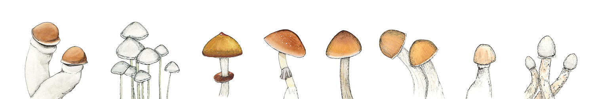

Welcome to your one stop shop for magic mushroom spores. We offer high quality, labratory grade Psilocybe mushroom spore syringes with proven genetics. Everyone's mycology journey starts somewhere, click the button below to start yours today!
The B+ Mushroom is really that of legend. From a mysterious origin story where growers have rumored that this strain...
The Golden Teacher Mushroom strain is a well-known psychedelic mushroom known to mycologists and psychedelic mushroom...
The Jedi Mind Fuck Mushroom is believed to have been discovered in the wildlands of Georgia by a mycologist named...
The Penis Envy Mushroom is one of the most famous and sought-after spore strains in the world, as evidenced by its widespread use in...
“In a forest, you can see one third of it, which is the trees. But two-thirds are underground. It's like the roots that go down. And the way trees communicate with each other is through mycelium. And mycelium is a mushroom. It's a fungus. The whole of the forest communicates through this layer of mushrooms. Mushrooms are a great connector and you can think about that analogy… imagine yourself as a tree. And you've got your trunk, which is your connection to yourself. And you've got your branches which are your ideas going out. And then you've got your roots and you've got this layer of mycelium and you're connected to all these other people. And so to make your tree grow really strong, it's about your place in the forest. You're not standing alone.”
Click the button to get started